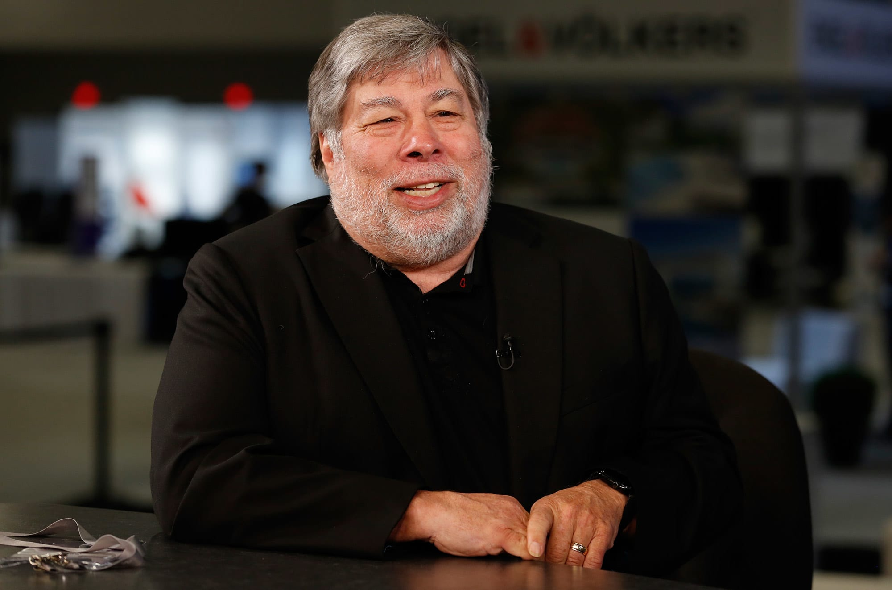

1950
"Hope will never be silent."
Stephen Gary Wozniak (/ˈwɒzniæk/; born August 11, 1950), also known by his nickname "Woz", is an American technology entrepreneur, electronics engineer, computer scientist, computer programmer, philanthropist, and inventor. In 1976, he co-founded Apple Computer with his late business partner Steve Jobs, which later became the world's largest technology company by revenue and the largest company in the world by market capitalization. Through his work at Apple in the 1970s and 1980s, he is widely recognized as one of the most prominent pioneers of the personal computer revolution.[4]